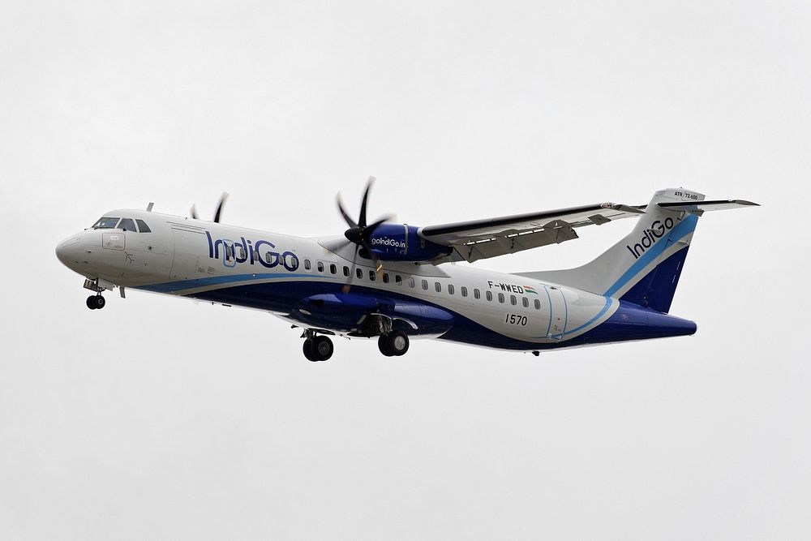
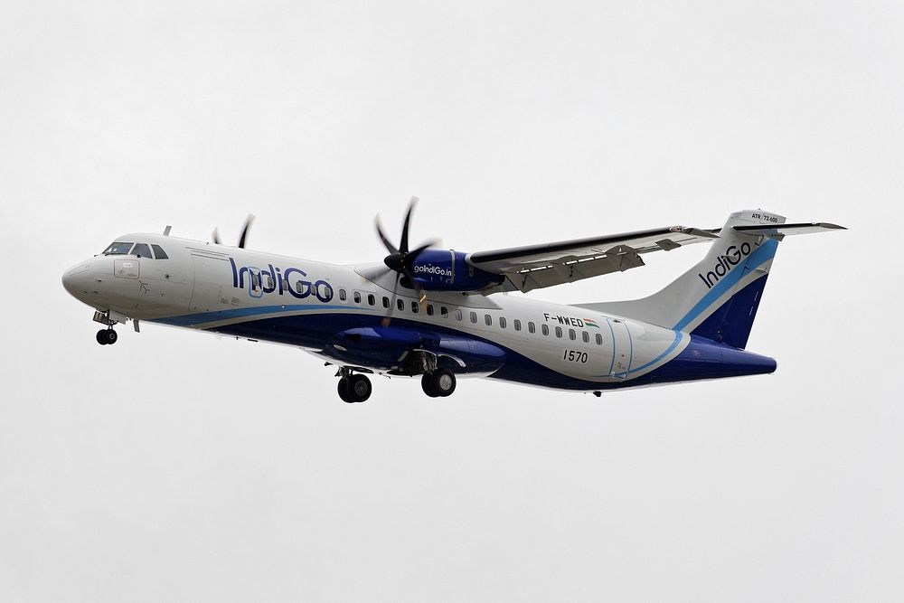
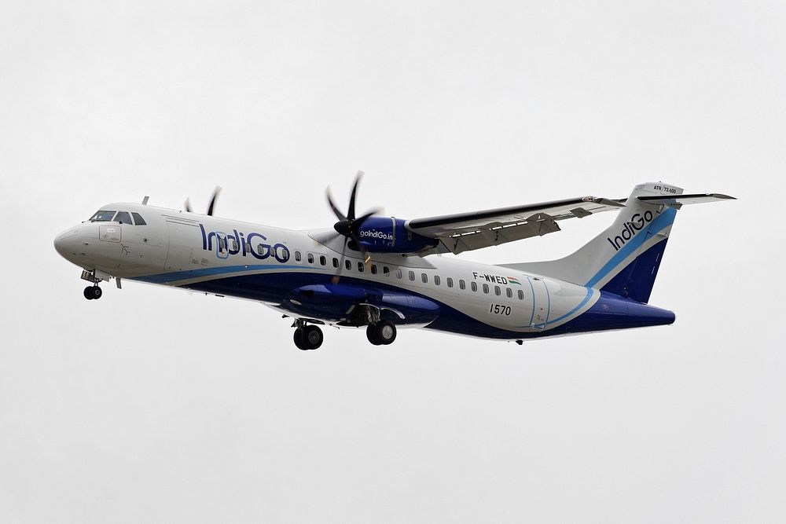

Foreign Object Debris (FOD) includes any item that doesn’t belong on the ramp—such as bolts, tools, plastic, or even paper wrappers. These items, though small, can cause major damage if ingested by aircraft engines. FOD checks must be conducted three times.
Pre-arrival
Pre-departure
Post-departure
Everyone working at the bay is responsible for maintaining a clean and safe ramp. Items found should be disposed of in designated FOD bins located in each bay or on the passenger ramp.
🚫 Jet Ingest vs Jet Blast
Jet engines pose two main hazards: jet ingest and jet blast. Jet ingest occurs at the front of the engine, where strong suction can pull in nearby objects—or people. Jet blast happens at the rear and can send powerful gusts of air that knock over objects or workers. To stay safe, keep at least 5.79 meters from the front and 60 meters from the rear of any active engine. Always stay outside the Engine Running Area (ERA) when engines are on.
✈️ Safe Time to Approach the Aircraft
Approach the aircraft only after the engines have completely shut down, the Aircraft Communication Beacon (ACB) is turned off, chocks are in place, and the engineer has given the "all clear" signal. On Airbus aircraft, ACBs are located on the top and bottom of the fuselage; on ATR aircraft, they are on top of the tail and bottom of the fuselage. Always visually confirm these safety cues before moving close to the aircraft.
🔧 Cone and Chocks Placement: A320, A321, ATR
Proper cone and chock placement ensures the aircraft remains secure. For the A320 and A321, use 11 cones and 8 chocks during normal weather; increase to 12 chocks during high winds. For ATR aircraft, use 10 cones and 6 chocks regardless of wind conditions. In winds above 25 knots, remove all cones to prevent them from becoming dangerous projectiles. Always refer to the placement guidelines for each aircraft type.
Aircraft Type
Number of Cones
Number of Chocks (Normal Weather)
Number of Chocks (High Wind)
Airbus A320
11
8
12
Airbus A321
Same as A320
Same as A320
Same as A320
ATR
10
6
6
💡 Know Your Aircraft: A320, A321, and ATR
Identifying aircraft types is essential for safe and efficient ramp operations. The Airbus A320 typically carries 180–186 passengers, has 4 doors, and 3 cargo holds. The A321 is a longer version, with 222–232 passengers, 6 doors, and 5 cargo compartments. The ATR is a turboprop aircraft designed for regional travel, seating 78 passengers, with only 1 main door and 4 cargo compartments. ACB (Aircraft Communication Beacon) light positions vary: A320 and A321 have lights on top and bottom of the fuselage, while ATRs have them on the tail and belly.

Feature
A320
A321
ATR
Passenger Capacity
180 / 186
222 / 232
78
Lavatories
3
3
1
Doors
4 (L1, L2, R1, R2)
6 (L1, L3, L4, R1, R3, R4)
1
Cargo Holds
3 (Fwd, Aft, Bulk)
3 (Fwd, Aft, Bulk)
2 (Fwd, Rear)
Compartments
4 (1, 3, 4, 5)
5 (1, 2, 3, 4, 5)
4 (FWD R, FWD L, REAR Fwd, Rear Aft)
ACB Light Position
Top and Bottom of Fuselage
Top and Bottom of Fuselage
Top of Tail, Bottom of Fuselage
🦅 3 Door Operation
Different aircraft models require different door configurations during operations. The Airbus A320 uses L1, L2, and R1 for boarding and servicing. The longer Airbus A321 uses L1, L4, and R1 to enable faster turnaround and passenger flow. Understanding the door layout helps in proper equipment placement and safe ramp operations.
💡 Hotel Mode in ATR
Hotel Mode refers to the ATR aircraft using its APU (Auxiliary Power Unit) to power onboard systems while the main engines are off. Unlike when connected to a Ground Power Unit (GPU), Hotel Mode means the aircraft is self-powered. This mode supports lighting, air conditioning, and avionics but requires caution. The APU exhaust is hot, and systems remain active. Always wear PPE and maintain safe distance during Hotel Mode operations.
💡 Load Distribution Message (LDM)
The Load Distribution Message (LDM) provides detailed information about the distribution of passengers, baggage, and cargo. Proper balance is critical to avoid dangerous shifts in the aircraft’s center of gravity. Overloading either end of the aircraft can result in instability during flight. Always refer to the LDM to ensure even and safe loading.
💡 Load Instruction Report (LIR)
The Load Instruction Report (LIR) outlines how and where cargo, mail, and baggage should be loaded. It includes three columns: Arrival Load (items already onboard), Planned Loading (intended load), and Final Loading (actual load after check-in). Accurate adherence to the LIR is essential to maintain balance and ensure a safe flight. No changes should be made without proper approval.
💡 Handling HUM (Human Remains)
Handling HUM cargo requires respect, care, and strict adherence to procedures. On Airbus aircraft, HUM is placed in the bulk hold (5th compartment), with the head facing the nose of the aircraft to prevent internal fluid movement during flight. Always secure with two straps and follow package labels such as "This Side Up." Improper handling is both disrespectful and unsafe.
💡 Wind Chart Guidelines
The wind chart is a critical operational reference that outlines mandatory safety precautions based on wind speed. The stronger the wind, the greater the risk to ground operations and personnel safety. Adhering to wind chart thresholds ensures aircraft and equipment are protected from damage and prevents injury on the ramp.
25–39 knots: Secure all loose items and monitor wind-sensitive equipment.
40–59 knots: Tie down ground equipment, chock aircraft wheels, and suspend non-essential operations.
60+ knots: Cease all ramp operations, evacuate exposed areas, and shelter all ground personnel.
The wind chart should be treated as an enforceable operational policy. Ground personnel must never continue working in violation of wind limits. Safety takes precedence over schedule.
💡 Safety Management System (SMS)
A Safety Management System (SMS) provides a structured framework for identifying, reporting, and mitigating hazards on the ramp. Every staff member is responsible for safety awareness and timely reporting.
Key Definitions:
Hazard: Any condition or object with the potential to cause injury, damage, or operational disruption (e.g., oil spills, equipment defects, or foreign objects).
Incident: An unplanned event that does not result in damage or injury but indicates a safety risk (e.g., near misses).
Accident: An event resulting in injury, damage, or loss.
Reporting Protocol:
Report hazards such as equipment malfunctions or unsafe parking under aerobridges to the Safety and GSE teams immediately.
Use the physical SMS form available in the backup office or the digital reporting tool via 6E Breez.
Never attempt to fix or hide safety issues independently—always report first.
Prompt reporting prevents minor hazards from escalating into serious incidents. SMS participation is mandatory for all operational staff.
💡 Disability Awareness on the Ramp
Disability encompasses a wide range of visible and invisible conditions that may affect an individual’s ability to perform tasks or interact in typical ways. Ground crew and ramp staff must demonstrate respect, patience, and inclusivity when working with passengers or colleagues with disabilities.
Common Types of Disabilities Include:
Visual Impairment
Hearing Impairment
Mobility Impairment
Autism Spectrum Disorder (ASD)
Down Syndrome
Cerebral Palsy
Epilepsy
Multiple Sclerosis (MS)
Parkinson’s Disease
Amputation
Spinal Cord Injury
Schizophrenia
Depression
Anxiety Disorder
Learning Disabilities (e.g., Dyslexia)
Intellectual Disabilities
Chronic Fatigue Syndrome
Post-Traumatic Stress Disorder (PTSD)
Speech Impairments
Uncontrolled Diabetes
Disability is not always visible. All staff must treat every individual with dignity and avoid assumptions. Providing support, being patient, and demonstrating empathy are core to creating a respectful and safe working and traveling environment.
Inclusion is not optional—it is an operational and ethical requirement.
💡 Types of Boarding Passes
Boarding passes come in various formats depending on the check-in method used by the passenger. Staff must be familiar with each type to ensure smooth facilitation at boarding gates.
Web Check-in Boarding Pass: Generated online and printed or saved on a mobile device. Convenient and reduces check-in counter load.
Kiosk Boarding Pass: Printed at airport self-service kiosks. Allows passengers to check in independently.
DigiYatra Boarding Pass: Biometric-based digital boarding process requiring facial recognition. Streamlines security and boarding formalities.
Counter-Issued Boarding Pass: Printed by ground staff at check-in counters. Common for special assistance cases or those who require document verification.
Manual Boarding Pass: Handwritten and issued only during system outages. Used as a contingency method.
Regardless of the format, always verify the passenger's name, flight number, and boarding gate. Ensuring accuracy prevents delays and misboardings.
💡 Types of Wheelchairs
Different types of wheelchairs are used at the airport based on the specific assistance required by the passenger. The correct type is determined by the SSR (Special Service Request) noted on the boarding pass.
WCHC: For passengers who are completely immobile and need full assistance from check-in to aircraft seat.
WCHR: For passengers who can walk short distances but require a wheelchair for navigating the airport.
Ostrich Wheelchair: Designed for onboard mobility and passengers who need posture support while seated.
Always verify the SSR code and select the appropriate wheelchair accordingly. Passenger comfort and safety must be prioritized at all times.
💡 PSHD – Priority Service Helpdesk
The Priority Service Helpdesk (PSHD) provides follow-up support for passengers who experience dissatisfaction at the airport. Ground staff must escalate unresolved issues to PSHD for timely action.
Action Steps for Staff:
Remain calm and courteous when handling upset passengers.
Inform the Manager on Duty (MOD) immediately if the issue escalates.
If the passenger departs the airport or boards with an unresolved concern, report the case to PSHD with the following details:
Passenger’s Name
PNR (Booking Reference)
Brief description of the issue
Service recovery actions taken (e.g., assistance offered, refreshment provided, apology given)
Timely reporting ensures continued customer care and helps maintain service quality beyond direct interactions.
🏁 Module Completion – Final Challenge Awaits!
Congratulations on completing all training modules. You’ve gained essential knowledge to perform your ramp and airport duties safely and effectively.
The final step is to complete Quizzes 2 and 3—a comprehensive test of all topics covered. This ensures readiness for real-time application and compliance.
Proceed to the quiz page to begin your final assessment.


 
